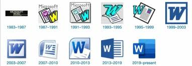

O Microsoft Word é um dos programas mais conhecidos do mundo para criar textos, trabalhos escolares, relatórios e documentos profissionais. Para entender por que ele se tornou tão importante, vale conhecer sua trajetória desde os anos 1980 até hoje.
Nesta aula, você vai ver os principais marcos da história do Word e como cada fase trouxe recursos que usamos no dia a dia.
A primeira versão foi lançada em 1983 com o nome Multi-Tool Word para o sistema Xenix e logo depois para MS-DOS. Na época, ele já trazia ideia de formatação visual, algo avançado para aquele período.
Com o crescimento do Windows, o Word ganhou interface gráfica, menus e uso mais amigável com mouse. Isso ajudou muitos usuários iniciantes a produzir documentos com mais facilidade.
Quando passou a integrar o Microsoft Office junto com Excel e PowerPoint, o Word virou referencia em empresas e escolas. Nessa fase surgiram recursos como corretor ortografico, modelos prontos e melhor controle de impressao.
Com o Office 2007, o Word adotou a interface Ribbon (faixa de opções) e o formato DOCX. O novo formato deixou os arquivos mais leves e melhorou a compatibilidade entre versoes.
Hoje o Word funciona em computador, navegador e celular, com integração ao OneDrive. Isso permite salvar na nuvem, compartilhar documentos e editar em equipe em tempo real.
Nas próximas aulas do modulo de Word, vamos praticar a criacao e formatacao de documentos passo a passo.